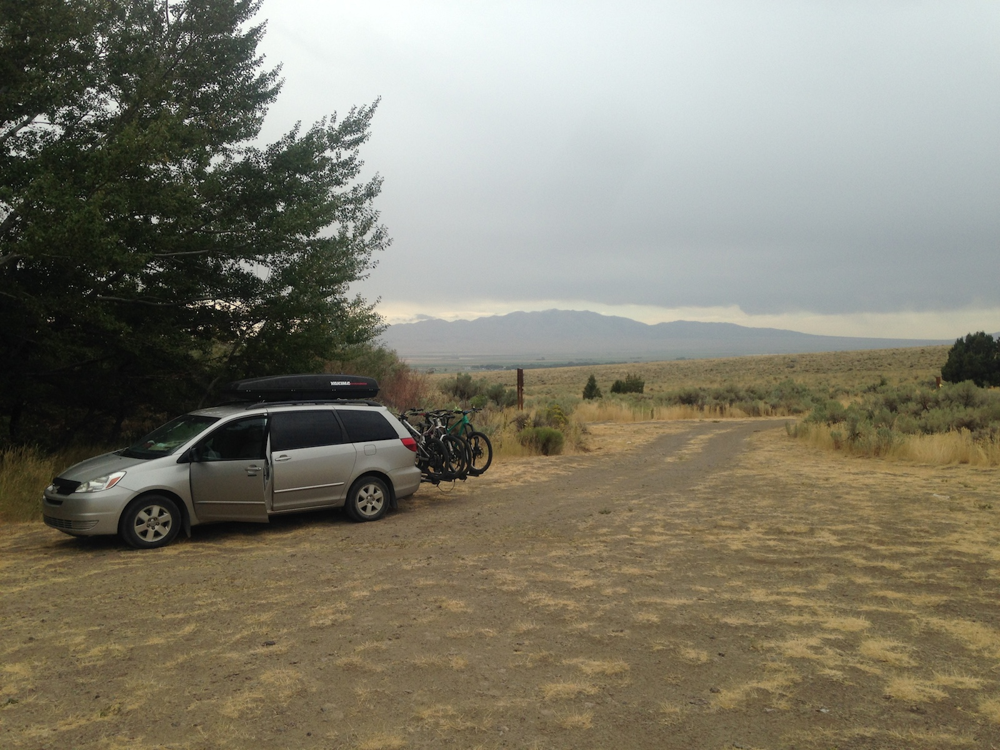
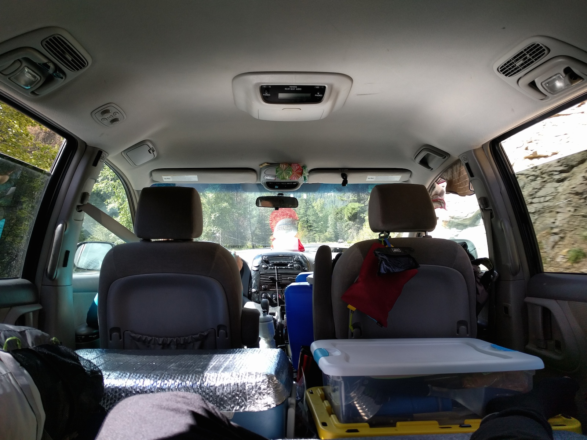
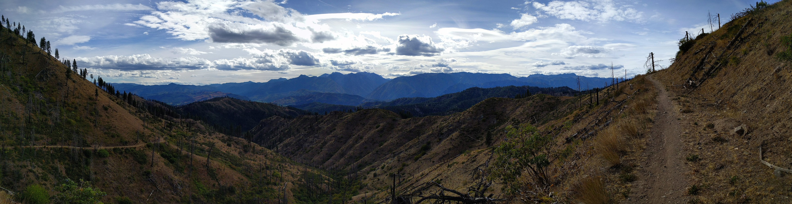
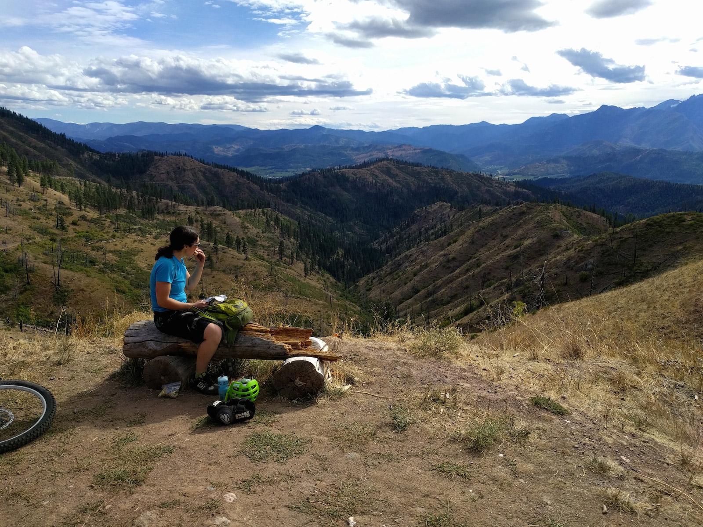
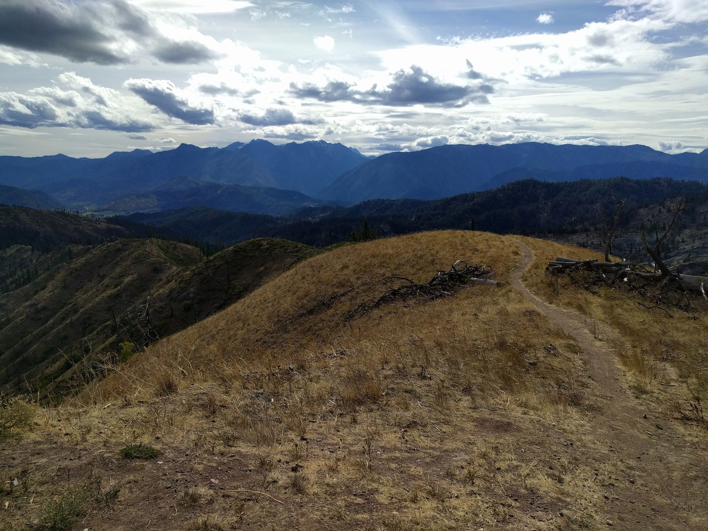
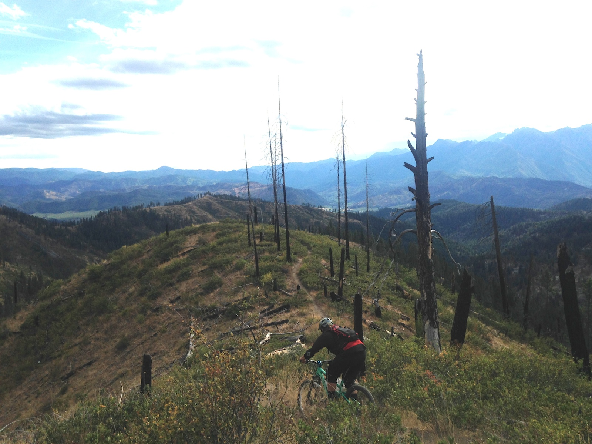
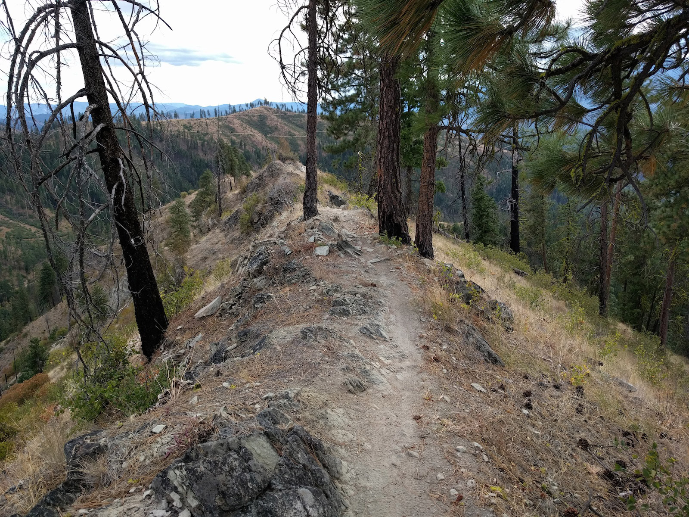
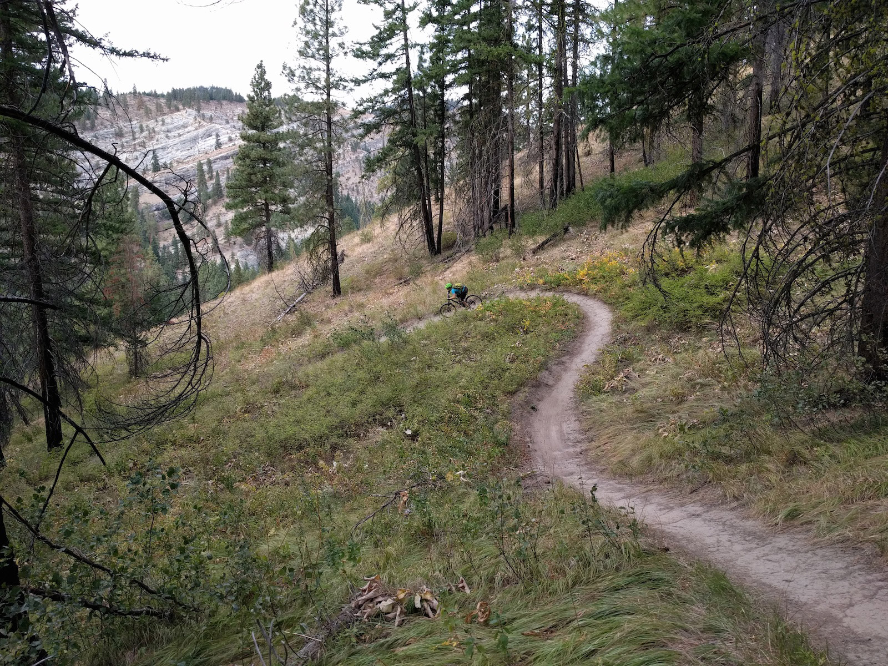
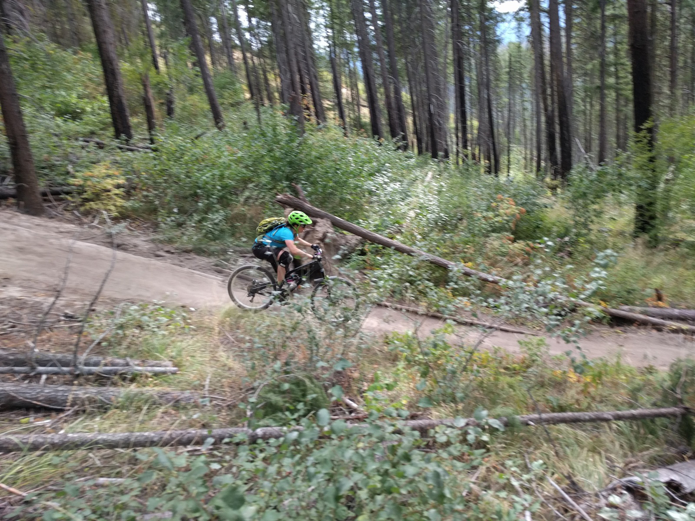

Central
On our way to WA we stayed at a free campground in southern Idaho called McClendon Springs.

It was in the middle of nowhere but turned out to be a wonderful campspot.
We spent day 4 driving through the rest of Idaho and Eastern Oregon to Washington.

Stretching in the back of the van, waiting out traffic on the way to Peshashtin WA to ride a trail called Xanadu. Day 5.

The view on the way up to Xanadu. You can see the trail we climbed on the left. The trail down is on that first ridge.

Made it to the top! Not a bad spot for a picnic.

4 mile, 1700′ vertical road climb done. Time to take the ridge back down!

A little further down the ridge.
Doesn't look like much in the photo but this was one of the longest steepest mandatory rock slabs we have ever ridden (pre-Squamish)
Made it down the slab!

The last bit of ridge before the trail heads into the forest.

Once the trail entered the forest, it became super fast and flowy with lots of berms and little jumps.
Not loam, but still super fun.

There were some fun little jumps at the bottom of the trail.
And a random weird rock.
After the ride we went to nearby Leavenworth for some food. The town is completely Bavarian. Even the McDonalds and Subway are designed in a traditional Bavarian way. The beer, bratwurst, and sauerkraut at Munchen Haus were excellent!
HomeTopTiger Mountain